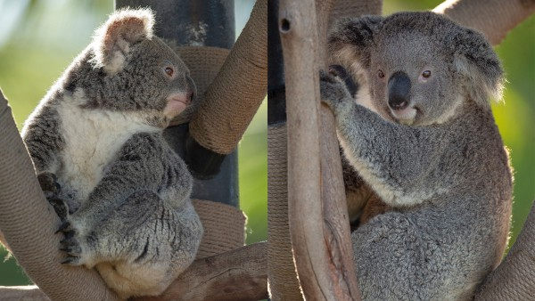

Gallery
Each card represents a coding concept or fun koala fact!

Koalas sleep 18 to 22 hours a day to conserve energy, since their diet of eucalyptus leaves is low in nutrients.
Their sharp claws and opposable thumbs help them climb trees quickly and grip branches tightly, which is crucial since they spend most of their life in eucalyptus trees.
Koalas have fingerprints so similar to humans that even under a microscope, they could be mistaken at a crime scene.
Koalas rarely drink water. They get most of their hydration from eucalyptus leaves, which are about 50 to 70% water.
If eucalyptus leaves ferment naturally, the koala can get a little tipsy from eating them. Scientists call it “leaf intoxication".